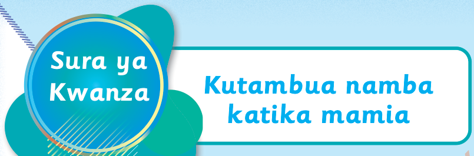

Tusome na kuandika namba kuanzia 101 hadi 999
Kusoma na kuandika namba ni msingi wa kujifunza kuhesabu. Sasa tujifunze kusoma na kuandika namba zisizozidi 999.
Tuimbe wimbo huu
Nani mwenye mfuko wangu uliopotea x 2.
Njooni tuhesabu namba.
Mia moja na moja, mia moja na mbili, mia moja na
tatu, mia moja na nne, mia moja na tano.
Nani mwenye mfuko wangu uliopotea x 2.
Njooni tuhesabu namba.
Mia moja na sita, mia moja na saba, mia moja na
nane, mia moja na tisa, mia moja na kumi.
Nani mwenye mfuko wangu uliopotea x 2.
Njooni tuhesabu namba.
Mia moja kumi na moja, mia moja kumi
na mbili, mia moja kumi na tatu, mia moja
kumi na nne, mia moja kumi na tano.